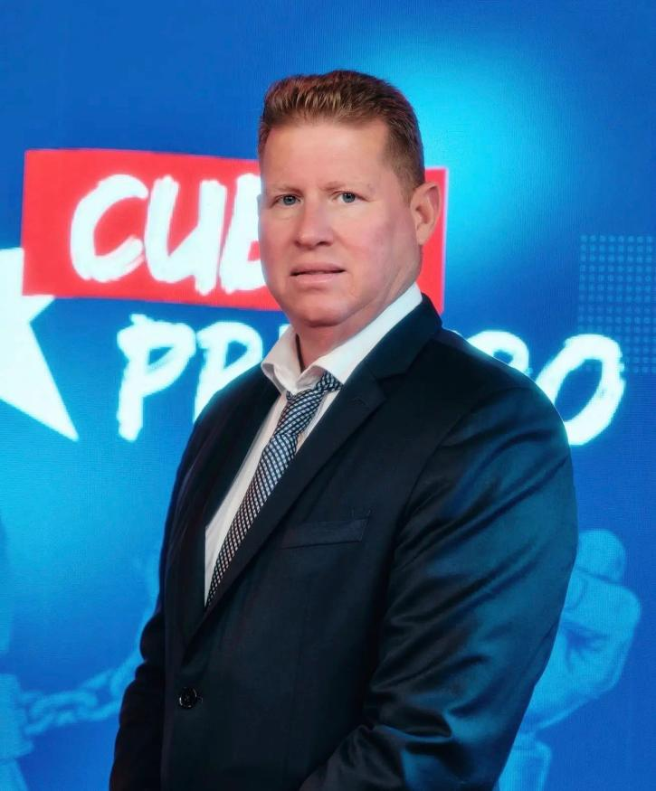

Nota de neutralidad: ENTRE TODOS no respalda ni promueve ninguna candidatura. Esta página registra declaraciones públicas de intención de candidatura, organiza las plataformas conocidas por categorías temáticas comparables, y abre cada una a evaluación ciudadana. La inclusión en este registro no implica endorsement.
Candidatos Declarados · Cuba
Candidatos para un escenario de transición
Personas que han declarado públicamente su intención de postularse a la presidencia de Cuba en un escenario de elecciones libres. Cada candidato puede someter su plataforma completa para evaluación ciudadana.

Armando
Labrador
Labrador
Próximo
Armando Labrador
Cuba Primero · Candidato a la Presidencia
Mar 2026
Declaración
Perfil
Empresario cubano-americano, 56 años, fundador y líder del movimiento Cuba Primero. Reside en Miami, Florida, donde dirige una clínica de cirugía estética. Salió de Cuba de adolescente tras la prisión de su padre —encarcelado ocho años por el régimen— y la ejecución de su abuelo.
Ha escrito dos obras de teatro y una canción sobre la resistencia al régimen cubano, y acumula cientos de miles de seguidores en redes sociales.
Movimiento
Cuba Primero — aproximadamente 100 disidentes activos dentro de Cuba + red en el exilio. No afiliado a partido político.
Base
Miami, Florida. Red de apoyo en Cuba interior (alcance difícil de verificar por control estatal).
Sitio oficial
armandolabrador.com
Posicionamiento declarado
Cambio radical. No violencia. Alineación con presión internacional (EE.UU. / Trump). Énfasis en experiencia empresarial privada.
Plataforma conocida
La plataforma de gobierno de Armando Labrador no ha sido publicada en detalle. Los puntos siguientes reflejan posiciones declaradas públicamente en entrevistas y declaraciones. Cuba Primero puede someter su plataforma completa para su incorporación y evaluación ciudadana.
Modelo de Transición
Cambio radical sin negociación con el régimen
Declara que no cabe ningún tipo de diálogo o negociación con el gobierno actual. El cambio debe venir desde afuera y desde abajo, sin otorgar legitimidad al régimen vigente.
Relaciones Internacionales
Presión internacional como palanca principal
Apoya activamente la presión de EE.UU. sobre Cuba. Ha comunicado directamente con representantes del gobierno Trump sobre la estrategia de cambio en Cuba.
Modelo Económico
Empresa privada como motor de desarrollo
Fundamenta su candidatura en su experiencia como empresario exitoso fuera de Cuba. Propone el modelo de empresa privada como alternativa al sistema estatal vigente. Detalles pendientes.
Activismo Ciudadano
Red de resistencia no violenta dentro de Cuba
Cuba Primero organiza protestas, pinta graffiti de resistencia en el Malecón habanero y canaliza el descontento popular hacia una expresión política organizada.
Marco Constitucional
Pendiente de publicación
No se ha declarado posición pública sobre el modelo constitucional propuesto para un gobierno de transición.
Derechos Humanos
Pendiente de publicación
No se ha declarado posición pública detallada sobre derechos humanos, justicia transicional o modelo de reconciliación nacional.
Fuentes:
Bloomberg News, 25 mar 2026 ·
El Financiero MX, 25 mar 2026 ·
SDP Noticias, mar 2026 ·
armandolabrador.com
¿Eres un candidato declarado?
Si has anunciado públicamente tu intención de postularte a la presidencia de Cuba en un escenario de transición democrática, puedes solicitar tu inclusión en este registro y someter tu plataforma completa para evaluación ciudadana.
Solicitar inclusión